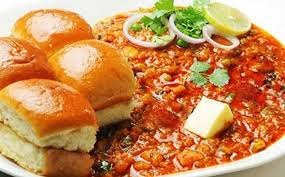

This dish developed in the Mughal kitchen is famous for more than one reason. The aromatic basmati rice is made with a mix of Indian spices and the tender pieces of meat will make you salivate in no time. For vegetarians, there is a veg option also available. It is a wholesome meal and you can have it with mirch ka salan or raita.
They say you will keep coming back to Hyderabad for the yummy Haleem. During the month of Ramadan, there is a high demand for it and most restaurants make it, but it gets sold out quickly. Haleem is a healthy and delicious stew made of meat, lentils, and pounded wheat. It is topped with dry fruits, saffron, ghee, and served hot. Keep in mind that all joints don’t make it throughout the year.
If you are in Hyderabad, there’s no way that you won’t be having dosa for breakfast or as an evening snack. This is a classic, made in every house. It is also a popular street food option and you can visit the bandis to relish some crisp dosa with podi and coconut chutney. Not only regular dosa, but you can also try different types of dosas in Hyderabad like cheese dosa, paper dosa, pav bhaji dosa, Maggi dosa, mutton keema dosa, and more. You may have had dosas in other parts of the country but there’s nothing like Hyderabadi dosas. These are inexpensive and keep you full for a long time.
You have to thank the Mughals for the widely loved kebabs that melt in your mouth. In Hyderabad, almost all restaurants make their version of the succulent, flavourful kebabs. The well-marinated, minced mutton is cooked with fresh herbs to leave you drooling. The mouth-watering kebabs are also added to biryani and rolls. There are various types of kebabs like galouti kebabs, burra kebabs, kakori kebabs. These are best enjoyed with raw salads and lime.
Want a meal that’s hearty, satisfying and delightful too? Here’s it – mashed spiced vegetables; served with a side of cotton-like soft, buttery dinner rolls, crunchy onions, herby fresh coriander and tangy lemon. To sum up, the Pav Bhaji – a famous street food from the ‘city of dreams,’ Mumbai. This Pav Bhaji Recipe is going to be create fireworks on your palate! Check out my step-by-step picture guide and video of making this delicious street style dish in 2 ways – one, traditionally and two, as a quick Instant Pot recipe.

Samosas are the evening snack we all know about, but keema samosas are special. This is an instant hunger fix. A crispy exterior and a filling of minced meat is going to leave you craving for more. This is an iconic Hyderabadi street food and the best place to try it is in ld Hyderabad city while sipping a cup of Irani chai.